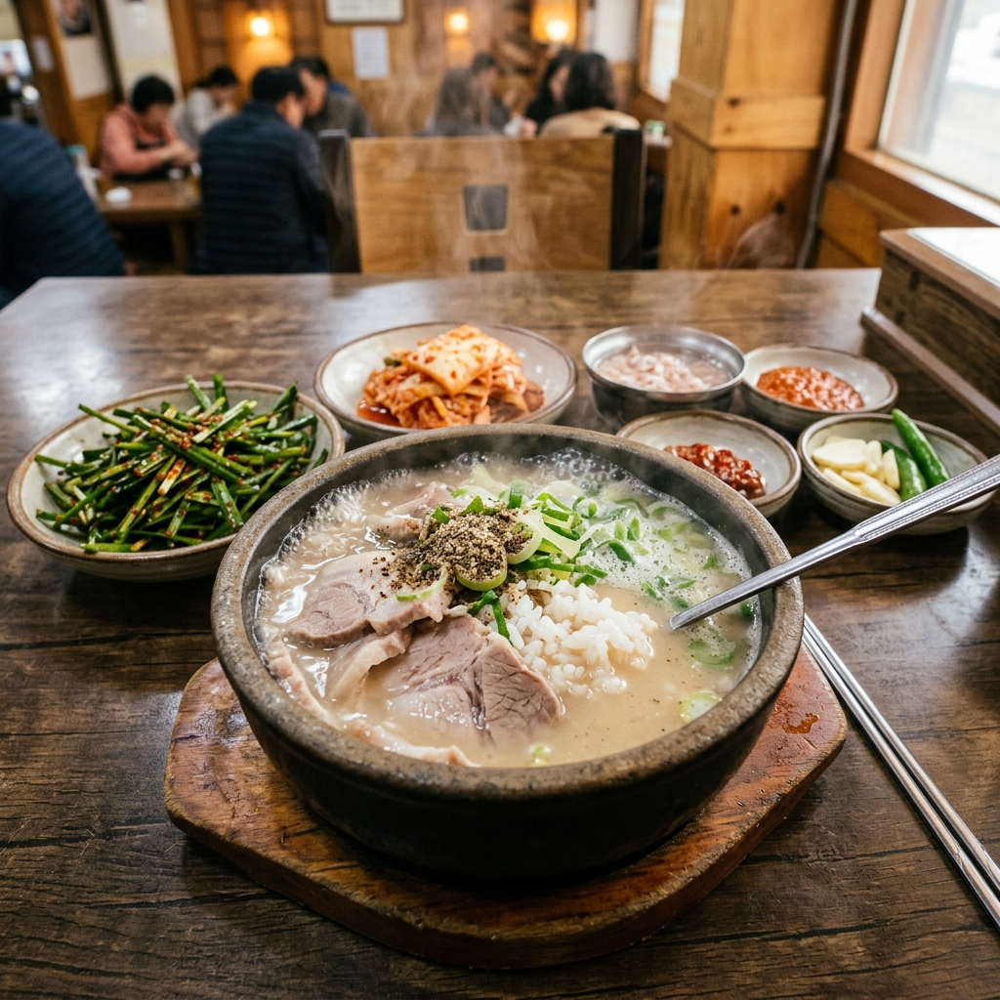
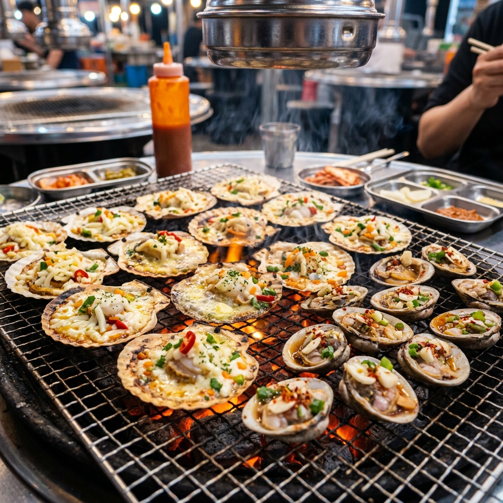
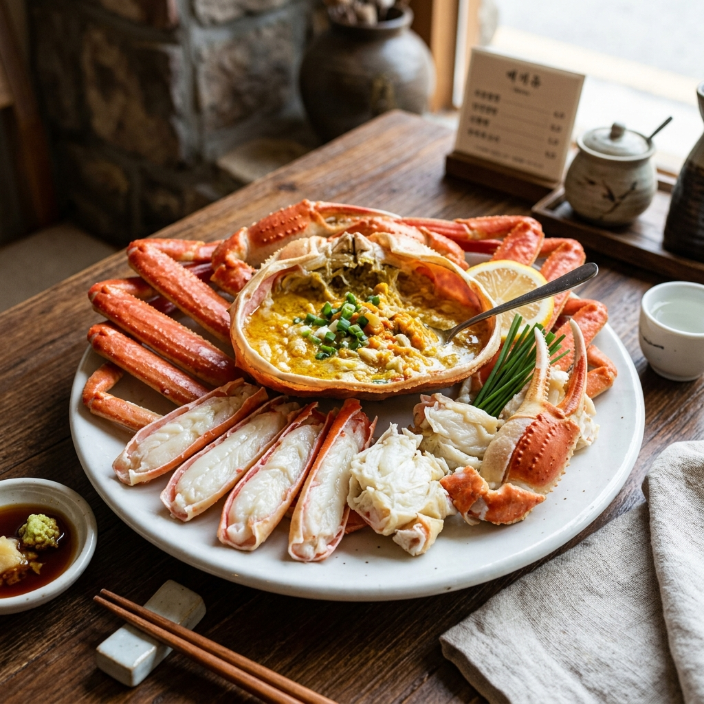
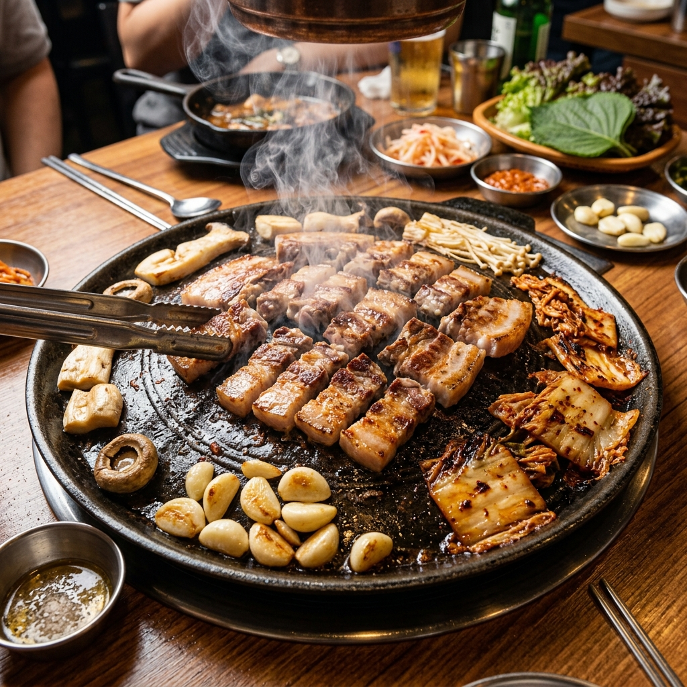
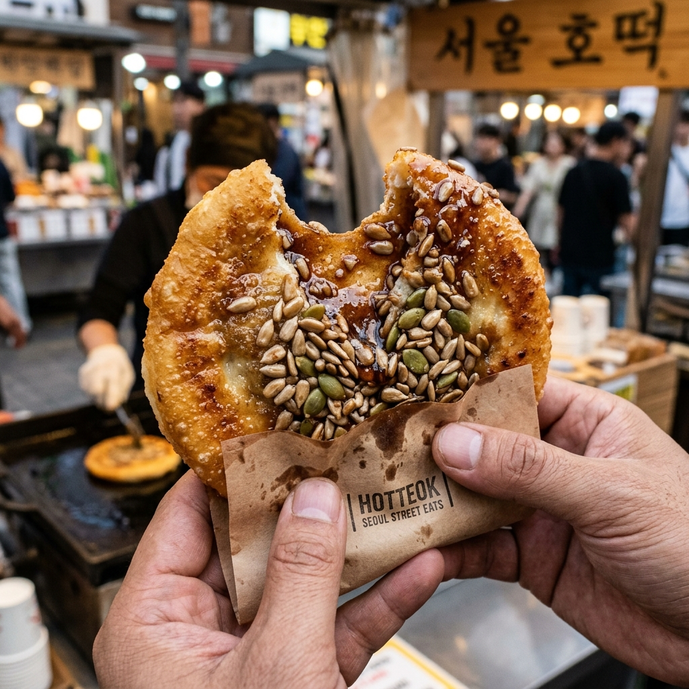

釜山自由行 6天5夜 極致玩樂指南
2026 釜山家族旅遊 - Q版導覽地圖與行程插畫
🎉 專為 Yen Peiju 家族（3大2小）打造的雙風格卡通地圖！包含天空膠囊列車、樂天世界、Spa Land 汗蒸幕、松島海上纜車與札嘎其帝王蟹大餐！
航班與住宿資訊
釜山計程車價格合理，4人出行平分後甚至比地鐵還划算，還能免去拖行李爬樓梯之苦！
六天五夜詳細行程規劃

大韓航空 KE2086 抵達金海機場
飛機於 15:30 順利降落釜山金海國際機場，通關出關預計需 45 - 60 分鐘。出關後可先於機場大廳領取網卡或更換韓元。
搭乘兩台一般計程車直達飯店
5人出遊因計程車上限4人，必須拆搭兩台計程車。建議直接利用 Kakao T 或 Uber App 同時叫車。車程約 50 分鐘，兩台總車資預計約 70,000 - 85,000 KRW，直達海雲台飯店辦理 Check-in。
晚餐：海雲台伍班長烤肉
海雲台最知名的烤肉名店！以爐邊烤蛋及香氣撲鼻的烤五花肉與海鷗肉聞名。5人出行直接在門口領取號碼牌排隊，翻桌率快，美味烤肉是釜山夜的第一餐首選。
海雲台傳統市場與沙灘散步
吃飽後慢步到海雲台沙灘吹海風，欣賞璀璨夜景。隨後逛逛旁邊的海雲台傳統市場，可以買份尚國家辣炒年糕 (상국이네) 或排隊的黑糖堅果糖餅當作宵夜點心。
🌧️ DAY 1 雨天備案
若抵達時下大雨，建議取消海雲台沙灘漫步。晚餐【伍班長烤肉】有室內座位不受影響。宵夜可改在有遮雨棚的【海雲台傳統市場】內用餐，或直接前往飯店旁的【Ryan Holiday in Busan】室內 Kakao 角色體驗館遊玩。

松島海上纜車 & 龍宮雲橋
11:15 從飯店出發，搭乘兩台計程車直達松島（車程約 35 分鐘，兩台車資約 38,000 KRW）。於中午 12:00 VBP 48H 通行證正式啟用，免費兌換往返水晶纜車票與龍宮雲橋門票。坐透明水晶車廂飛躍蔚藍海面，走上鐵網懸空的吊橋。
松島雷射槍競技場 (Laser Arena)
位於松島纜車天空花園站 2 樓。使用 VBP 免費體驗一場室內雷射生存遊戲，與親友在迷宮般的雷射戰場中來場射擊對決，非常刺激好玩！
搭計程車前往鑽石灣遊艇碼頭
在松島天空花園周邊享用下午茶或點心後，搭乘兩台計程車前往【龍湖灣遊艇客運碼頭】（車程約 25 分鐘，兩台車資約 20,000 KRW），提前於 16:00 前完成報到手續準備登船。
廣安大橋鑽石灣遊艇 (夕陽航班)
使用 VBP 免費預訂下午 16:30 的黃金夕陽班次（需事先以 Email 預約）。搭乘高檔雙體遊艇出海，迎著溫柔海風，在海面上欣賞廣安大橋、五六島與釜山沿岸在落日餘暉下的絕美金黃景色，比夜航更容易拍出清晰好看的全家福！
西面 Running Man 體驗館
遊艇靠港後，搭乘兩台計程車前往西面三井大樓 10 樓（車程約 20 分鐘，兩台車資約 18,000 KRW）。使用 VBP 免費兌換門票，最後入場時間為 19:00。挑戰大型室內障礙迷宮與有趣的體能闖關，大人小孩都玩得超開心！
西面商圈與大創 (Daiso) 快速採買
三井大樓出來後步行 3 分鐘即可到達西面大創旗艦店，整棟好逛好買。順便逛逛西面地下街與流行服飾店。
晚餐：西面 83烤肉 (83해치)
西面站 8 號出口步行 2 分鐘，超高人氣排隊名店！主打外脆內嫩的多汁烤豬五花，全程由親切的店員為你代烤，搭配獨特海鹽與小菜，美味絕倫。吃完後搭乘兩台計程車返回海雲台飯店。
🌧️ DAY 2 雨天備案
若下雨導致【松島纜車/雲橋】與【夕陽遊艇】停駛/取消：
• 上午備案：改前往 Centum City 的【新世界百貨】與【Spa Land 汗蒸幕】（提前至今天體驗，全室內超舒服）。
• 下午/晚上備案：前往西面【三井大樓 (Samjung Tower)】體驗室內【Running Man】與大創購物，晚餐吃室內【83烤肉】。整天完全不淋雨！

EGG DROP (海雲台店)
從飯店步行僅需 2 分鐘（約 150 公尺）。超人氣韓式奶油歐姆蛋吐司，厚實香嫩，是快速又美味的早餐選擇！
海東龍宮寺
搭乘兩台計程車前往（車程約 25-30 分鐘，兩台總車資約 24,000 KRW）。這是韓國唯一建在海邊斷崖上的寺廟，依山傍海，景色極其雄偉壯麗，聽著海浪敲擊礁石的聲音參拜，心靈十分平靜。
午餐：機張市場松葉蟹大餐
搭計程車至機張市場（約 15 分鐘，16,000 KRW）。強烈推薦造訪市場內的「雪蟹之家 (대게하우스)」，現場親自挑选活跳跳的鮮美松葉蟹，蒸熟後有阿姨貼心為你剪蟹開殼，肉質極其甘甜飽滿，最後必點蟹膏炒飯！
樂天世界 Adventure 釜山
搭計程車前往樂天世界（約 12 分鐘，兩台車資約 14,000 KRW）。使用 VBP 免費兌換一日通票。這是一座以大自然與精靈為主題的樂園，夢幻的城堡場景與各種刺激的雲霄飛車是拍照打卡亮點！
Skyline Luge 釜山斜坡滑車
就在樂天世界隔壁。使用 VBP 免費兌換斜坡滑車 2 回券！搭乘高空滑雪吊椅上山，隨後駕駛無動力滑車順著斜坡軌道過彎疾馳而下，速度感十足，還能一邊欣賞落日海景！
海雲台 LCT X the Sky 觀景台
從東釜山搭乘兩台計程車返回海雲台飯店區（車程約 20 分鐘，兩台車資約 26,000 KRW）。回程直接購買外帶【PURADAK CHICKEN 炸雞海雲台店】。隨後步行前往隔壁的 LCT 地標大樓，使用 VBP 免費兌換門票登上 100 樓觀景台！在全景玻璃前俯瞰海雲台沙灘與廣安大橋的璀璨百萬夜景，還可以體驗刺激的透明玻璃步道！
🌧️ DAY 3 雨天備案
若東釜山下雨，【海東龍宮寺】石階濕滑且【樂天世界/Luge滑車】多為戶外設施：
• 上午備案：取消龍宮寺，改去隔壁的【國立海洋科技博物館】（免門票，有室內水族館與標本，極適合小孩）。
• 午餐備案：【機張市場松葉蟹】為室內餐廳，照常享用。
• 下午備案：取消樂天世界與滑車，改前往影島【Arte Museum 釜山】體驗室內光影藝術，或至【樂天 Premium Outlet 東釜山店】室內逛街。
• 晚上備案：【LCT X the Sky 觀觀台】為全室內，可照常登頂（若霧大能見度低，可改去海雲台【Sea Life 釜山水族館】）。

大海鮑魚粥 (바다마루전복죽)
沿海灘散步約 15 分鐘，或搭計程車 4 分鐘。釜山超人氣 30 年老店！使用活鮑魚與內臟熬煮成翠綠色粥品，味道極其香濃甘甜，鮑魚肉厚實，口感絕佳！
Centum City Spa Land 汗蒸幕
**極重要壓線！VBP 48H 於 12:00 到期！** 10:30 從海雲台出發，搭兩台計程車（約 12 分鐘，兩台車資約 12,000 KRW）前往新世界百貨，務必於 12:00 前刷卡換入場手環。使用 VBP 免費入場 4 小時。體驗全釜山最頂級的天然溫泉、各種主題高溫汗蒸房，並在裡面喝冰涼的甜米露配溫泉蛋。
海雲台藍線公園天空膠囊列車
從 Spa Land 出來後搭乘兩台計程車回到尾浦站（車程約 10 分鐘，兩台車資約 10,000 KRW）報到。搭乘膠囊列車（尾浦 ➔ 青沙浦）。抵達青沙浦後拍攝櫻木花道海景平交道，並搭乘海岸列車 (Beach Train) 回尾浦。
晚餐：味贊王鹽烤肉 (海雲台店)
位於海雲台地鐵站附近，主打 3.5 公分極厚切豬五花，店員代烤鎖住肉汁，金黃酥脆的烤五花肉配上石鍋飯與大醬湯，讓人欲罷不能。
🌧️ DAY 4 雨天備案
【Spa Land】與【味贊王烤肉】為全室內不受影響。若【天空膠囊列車】因強風大雨停駛：
• 下午備案：改去海雲台沙灘旁的【Sea Life 釜山水族館】（全室內，有海底隧道與企鵝，非常適合小孩），或在飯店附近大型海景室內咖啡廳喝茶看海。
影島 Arte Museum 釜山
搭乘兩台計程車直達影島（約 30 分鐘，兩台車資約 34,000 KRW）。這是釜山最大規模的數位光影藝術美術館，以「自然」為主題，逼真的裸眼 3D 瀑布與極光沙灘，帶來極度震撼的視覺與感官體驗！
午餐：影島海女村
從 Arte Museum 搭計程車前往海女村（約 10 分鐘，兩台車資約 10,000 KRW）。坐在海岸邊露天座位，體驗一邊吹海風，一邊大口吃現切新鮮海鮮（海膽、鮑魚、海參等）與招牌海膽飯捲、熱騰騰的海鮮拉麵！
影島白淺灘文化村 (Huinnyeoul)
搭計程車前往（約 12 分鐘，兩台車資約 13,000 KRW）。漫步在希臘聖托里尼風的彩色崖邊小徑，俯瞰蔚藍大橋海景。接著走下長階梯到海岸路，穿過絕美的海岸岩石隧道拍照。
午餐/下午茶：李在模 Pizza (本店)
搭乘兩台計程車抵達南浦洞（約 15 分鐘，兩台車資約 16,000 KRW）。全釜山甚至韓國人都為之瘋狂的傳訊手工披薩！香濃拉絲的 100% 純天然乳酪起司是其靈魂，餅皮鬆軟，是大人小孩都會愛上的神級滋味。
韓國釜山買棉被：藝珠寢具 (국제시장 예주침구)
步行約 10 分鐘前往國際市場。台灣旅客口碑極佳的「藝珠寢具」，銷售超高人氣的韓國四季被與冬被，觸感無比輕柔親膚、花色精緻，且可以直接機洗。店家有提供專業的真空壓縮包裝，非常方便塞進託運行李或直接提上飛機！
晚餐：札嘎其市場 125 號攤位吃帝王蟹
步行約 12 分鐘前往著名的札嘎其漁市場。推薦前往大樓二樓的 **125 號攤位（渡邊屋）**，挑選肥美的帝王蟹，現挑現蒸，大快朵頤鮮甜蟹肉與蟹膏海苔炒飯，絕對是回台前最澎湃的一餐！
🌧️ DAY 5 雨天備案
【Arte Museum 影島】、【李在模 Pizza】、【札嘎其帝王蟹】皆為室內，不受影響。若雨天導致【海女村】與【白淺灘】無法散步：
• 中午備案：取消海女村露天吃麵，改前往影島的【P.ARK 複合文化空間】（超大型海景室內咖啡廳與烘焙坊，落地窗看海，完全防雨）。
• 下午備案：取消白淺灘，提前前往南浦洞【光復路時裝街】與【南浦地下街】室內商圈逛街，並去國際市場【藝珠寢具】採購棉被（有雨棚防雨）。

退房與計程車出發
辦理快捷退房。06:00 從海雲台出發，搭乘前一天預約好的兩台一般計程車前往金海機場，車程約 50 分鐘。
辦理登機 & 退稅
在大韓航空櫃檯辦理行李託運、領取登機證，並前往退稅機台掃描護照辦理退稅與免稅品採購。
飛返台北桃園機場
搭乘大韓航空 KE2085 回台。預計於上午 10:30 順利降落台北桃園機場第一航廈，結束美好的釜山之旅！
🌧️ DAY 6 雨天備案
全程為飯店退房與機場搭機，計程車與機場大廳均為室內，不受下雨影響。請注意雨天路況可能較為擁堵，建議提早 10 分鐘於 05:50 出發。
Visit Busan Pass 省錢計算機
Visit Busan Pass (VBP) 是釜山官方發行的旅遊通行證，在限定時間內可以免費入場許多昂貴的熱門景點！
請勾選你們預計要去的付費景點，看看購買「48小時卡 (48H Pass)」可以為你們省下多少錢（48H 卡售價為 85,000 KRW）：
預算試算結果 (單人)
釜山必吃舌尖美食指南

豬骨精燉數十小時的濃郁白湯，搭配軟嫩豬肉薄片，吃之前依喜好拌入辣醬、蝦醬、大把韭菜，是暖胃的首選。

青沙浦或太宗台海邊的特產。將帶子、扇貝放在炭火上烤熟，加入奶油與起司絲，配上一碗超浮誇海鮮辛拉麵。


推薦西面「味贊王鹽烤肉」。3.5公分超厚切豬肉，專人用溫度槍精準測量烤盤溫度後桌邊代烤，外皮微焦，咬下噴汁。

南浦洞 BIFF 廣場的招牌。糯米麵團油煎到酥脆，剪開塞滿大量南瓜子、葵花子、花生碎與肉桂黑糖粉，香氣逼人。
釜山歷史悠久的魚糕名店。有各式各樣口味的精緻魚糕（起司、鮮蝦、鮑魚、年糕等），海雲台店門口還有巨型魚糕模型！
釜山行前準備與打包清單
證件與行程預訂
行李打包清單
旅遊指南、預約攻略與雨天備案
🔔 資深導遊貼心提醒 (三大兩小家族版)
- 🧳 Day 4 行李與交通省時技巧：因為全程入住同一間海雲台飯店，第四天完全不需要退房！行李全部留在房間即可。泡完 Spa Land 後，你們可以直接搭兩台計程車直達尾浦站搭乘膠囊列車（車程約 15 分鐘，免回飯店拿行李），行程最順又最省時！
- 👵 長輩體力與行程安全：
• 海東龍宮寺 (Day 3)：進入前有約 108 階陡峭石階。若阿嬤膝蓋不適，可沿入口左側平緩小路至觀景平台遠眺海中寺廟，免爬石階。
• 斜坡滑車 Luge (Day 3)：滑車需用力拉控制桿煞車。若阿嬤不方便玩，可讓她在 Luge 售票處隔壁的海景咖啡廳休息喝茶，幫大家拍照。 - ✈️ Day 6 清晨返程快速通關：早上 09:00 班機，06:00 需出發。導遊提醒：1. 前一晚請飯店櫃檯預約好清晨 06:00 的兩台計程車。 2. 出發前 24 小時（7/23 早上 09:00 起），在【大韓航空 App】線上辦理線上登機，取得電子登機證。至機場後直接走專用通道行李寄艙，能省下至少 30 分鐘的排隊時間！
- 🛏️ Day 5 買棉被與行李重量：在國際市場【藝珠寢具】買的棉被，店家提供真空壓縮打包，雖然體積縮小，但重量不變，請預留行李重量額度，或多準備一個手提袋提上飛機。
餐廳與景點預約攻略
- 札嘎其市場 125號（渡邊屋）：可以預約。老闆娘會說流利中文。建議出發當天早上請飯店櫃檯打電話預訂 5 人座位。
- 廣安大橋鑽石灣遊艇：必須預約。請在台灣提前 2~3 週寄信給官方，註明使用 VBP 免費方案以預定 19:30 夜景黃金班次。
- 李在模 Pizza (南浦總店)：不可預約。5人同行大桌現場排隊可能等很久，極力推薦利用專屬外帶點餐機點外帶（約 10-20 分鐘取餐），外帶到附近公園或路邊吃。
- 83烤肉 & 味贊王烤肉：不可預約。皆使用 CatchTable 現場抽號排隊。83烤肉建議於 19:00 先用手機 App 遠端線上抽號；味贊王若排隊人多，可選擇外帶或於 15:00-17:00 離峰用餐。
雨天備案計畫
若行程中遇到下雨，建議進行以下彈性調整：
- 室內景點優先：將 Spa Land 汗蒸幕、西面 Running Man 體驗館 或 Arte Museum 影島 調整至雨天當日，這三個都是全室內景點，完全不受下雨影響。
- 百貨購物與美食：雨天可前往 Centum City 新世界百貨（與 Spa Land 共構）或是西面的 三井大樓 (Samjung Tower)，兩處皆有豐富的美食街、購物商場與室內遊樂設施，吃喝玩樂一站搞定。
- 室外景點調整：若遇雨，樂天世界、Skyline Luge、松島海上纜車 / 雲橋、鑽石灣遊艇 可能會關閉或嚴重影響體驗。建議視氣象預報，提早將戶外行程移至晴天。
行程精簡與減速建議
若帶小孩體力不支或不想行程太趕，建議依序刪除以下景點：
- 優先刪除 ➔ 松島雷射槍競技場 (Day 2)：雖然在纜車大樓內，但雷射槍主要是刺激活動，若對射擊遊戲興趣一般可直接捨棄，多留時間給西面逛街。
- 次要刪除 ➔ Skyline Luge 釜山斜坡滑車 (Day 3)：若玩完樂天世界後覺得疲憊，可省去 Luge 滑車，直接在旁邊的樂天 Outlet 休息喝咖啡。
- 次要刪除 ➔ 影島海女村 (Day 5)：海女村是在岩石海岸邊露天吃海鮮，夏日中午可能較為炎熱且無冷氣，可改成在 Arte Museum 內吹冷氣，隨後直接跨海去南浦洞吹冷氣享用李在模 Pizza。